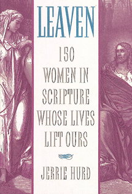
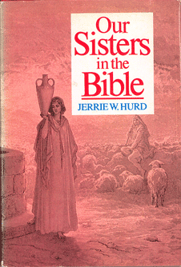

Nonfiction
Other Books

These books were written in the 1980s when new research by women theologians created an excitement about women in the scriptures. Leaven is collection of personal essays. The other two books draw more directly on that research. All three are available through Amazon and other used book dealers.
Table of Contents: Leaven
Why I Care About My Sisters in the Scriptures
How to Read the Scriptures and Not Miss the Women
The Parables Jesus Taught Women
The Scriptures and the Single Woman
Where Are the Young Women in Scripture?
What We Can Learn From the Unrighteous Women in Scripture
The Women in the Savior's Lineage
What Does It Rally Mean to be a "Mother in Israel?"
Even the Least of My Sisters in the Scriptures
Making the Scriptures Our Own
Getting from Everyday to Eternity
|  | ||
Blurb:
Our Sisters in the Latter-day Scriptures |
||
Opening Page: Our Sisters in the Bible
Many of my Latter-day Saint sisters believe that women are hardly mentioned in the standard works of the Church. They wonder if that apparent dearth of women in the scriptures implies insignificance. At first glance the scriptures may fail to provide a strong impression of women, but there are reasons for this: individual woman are rarely spotlighted; groups of women and anonymous references tend to fade into the background; the topical guide includes few entries dealing with women; and so on.
Actually, the scriptures, especially the Bible, are rich with womanly examples, but to see them, one must focus on them. The terms wife, woman, and mother can be easily skimmed over. Noting them establishes that women took part in events and creates a more balanced picture of family life in ancient times. Too often we see only Moses, when in the same text we could see Shiphrah, Jochebed, Miriam, and Zipporah. It helps to ask, while reading of battles and migrations, what the women were doing. In some cases, it is necessary to piece to the stories together. The story of Sarah is a good example. It is scattered throughout the narrative of Abraham. Because entire chapters are devoted to Abraham's activities and only a few verses to Sarah's, we tend to lose track of her, making her seem shadowy next to her husband. If, on the other hand, we read all the verses about Sarah at one time, she emerges as a strong, spiritual individual who coped well in difficult situations.
|  | ||
Home — Author — Contact — Novels — Memoir — Short Stories — Picture Books —Report Problem
© Jerrie Hurd (text, photos, design)